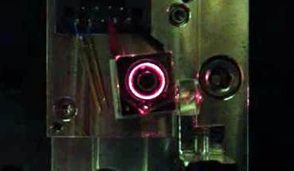
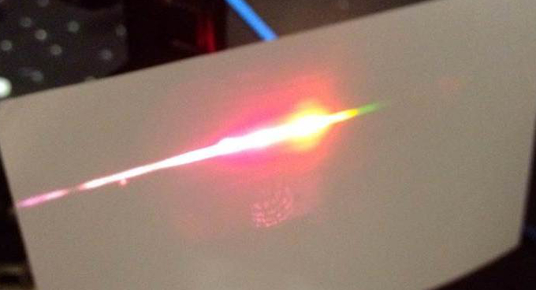

Microcavity Laser Stabilization

In collaboration with the Department of Mechanical Engineering,
we have transferred our knowledge of using optical cavities for laser stabilization to the realm of
microcavities. These cavities are, for example, millimiter-sized crystalline disks where light
can circulate around the perimeter in 'whispering gallery' modes. The microcavities have very high optical
and mechanical quality factors. Injection-locking of solid-state lasers to such cavities is an
interesting new way to manipulate light, and the devices are expected to be highly useful
for next-generation portable atomic clocks.
We have also collaborated on stabilizing other chip-scale optomechanical oscillators
to stable frequency references.
Optical Frequency Synthesizers

At ZLab, we have a fiber-laser optical synthesizer, or a frequency comb. This 'rainbow laser' emits an entire comb of
colors, spanning most of the visible range. These devices are indispensable in the field of precision measurements based
on atomic and molecular clocks, since they coherently connect radio frequencies to visible light, bridging a wavelength
gap of seven orders of magnitude. The frequency comb has been incorporated into our molecular lattice clock which runs in the terahertz
regime, falling between the radio-frequency hyperfine atomic clocks and optical atomic clocks. Our comb has also
been used to characterize new combs based on photonic microcavities. These miniature combs are being developed for field applications
such as portable atomic clocks and astronomical detection of extrasolar planets.